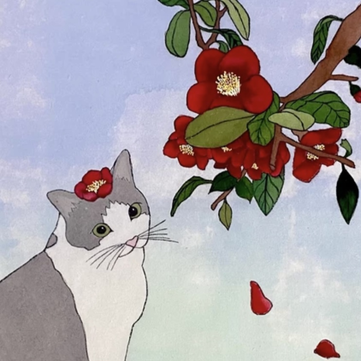

Greeting
환영합니다.
물리적인 책꽂이에 더이상 자리가 없어서 만들었습니다.
언젠가 집에 서재를 장만하는 게 꿈입니다.
원래 도서관을 세우는 게 꿈이었는데 조금 축소했습니다.
읽은 책을 기록하고, 읽으며 든 생각을 두서 없이 기록합니다.
목록에서 책 제목 또는 사진을 클릭하면 자세한 감상을 읽을 수 있습니다.
이 웹페이지는 모바일보다 PC 환경에 맞게 제작되었습니다.
좋은 하루 보내세요~
물리적인 책꽂이에 더이상 자리가 없어서 만들었습니다.
언젠가 집에 서재를 장만하는 게 꿈입니다.
원래 도서관을 세우는 게 꿈이었는데 조금 축소했습니다.
읽은 책을 기록하고, 읽으며 든 생각을 두서 없이 기록합니다.
목록에서 책 제목 또는 사진을 클릭하면 자세한 감상을 읽을 수 있습니다.
이 웹페이지는 모바일보다 PC 환경에 맞게 제작되었습니다.
좋은 하루 보내세요~

Hayoung Noh
Korea Univ. Linguistics 20
Linguistics & Psychology
lotusf99@korea.ac.kr
Korea Univ. Linguistics 20
Linguistics & Psychology
lotusf99@korea.ac.kr